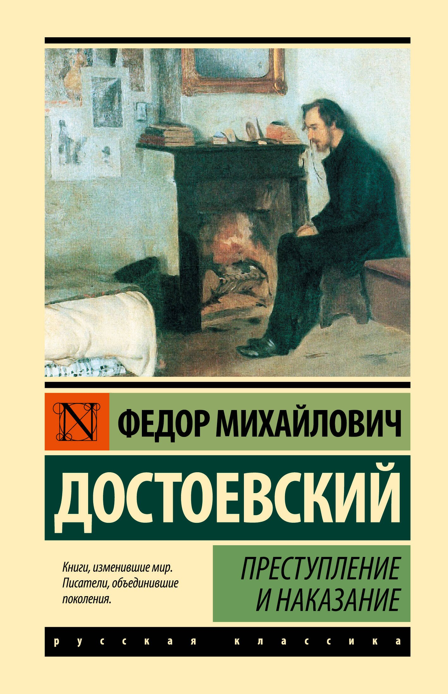

Нажми на картинку, чтобы увеличить
«Преступление и наказание» (1866) Ф.М. Достоевского — философский и психологический роман о бедном студенте Родионе Раскольникове, который убивает старуху-процентщицу, чтобы проверить свою теорию о разделении людей на «право имеющих» и «тварей дрожащих».
Действие разворачивается в Петербурге, который выступает мрачным фоном, подталкивающим к преступлению. Роман исследует душевные муки, раскаяние, роль совести и путь к искуплению через любовь и веру.